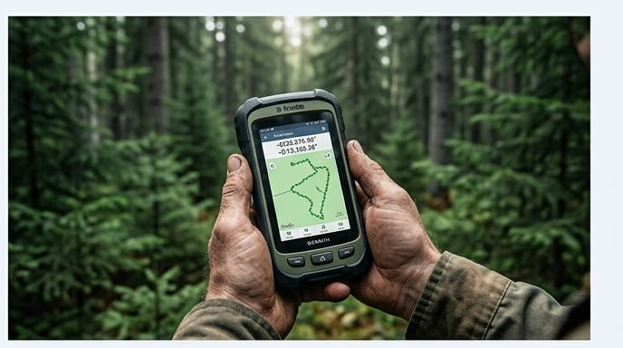
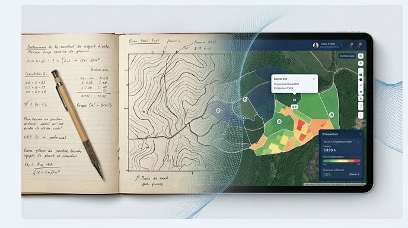
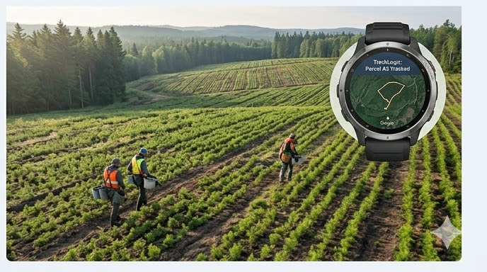

MobileLogix Integrates Artificial Intelligence for Forestry Professionals
G.A. Logix integrates an AI assistant directly into MobileLogix: forestry-specialized chatbot, voice reading, and automatic report generation.
Read moreUpdates, releases and forestry industry trends
G.A. Logix integrates an AI assistant directly into MobileLogix: forestry-specialized chatbot, voice reading, and automatic report generation.
Read more
Bluetooth SPP GPS, physical USB buttons, LED tracking indicator, and automatic driver installation — everything changing for fieldwork in 2026.
Read more
Official WMTS layers, enhanced WFS, offline maps, and Fulcrum/Survey123 form import — ForestLogix connects to government data.
Read more
Material Design 3, better battery life, more reliable sync, and Android 15+ support — MobileLogix levels up.
Read more
The new version of ForestLogix arrives with a completely redesigned interface, an improved cut planning module and real-time synchronization up to 3x faster. Discover what is changing for your field operations this season.
Read more
The accuracy of your GPS data depends as much on your practices as on your equipment. Dense forest canopy, weather conditions, receiver configuration — here are our recommendations for reliable surveys every time you head into the field.
Read more
Quebec's forestry industry is accelerating its digital transition. Between regulatory requirements, productivity gains and labour shortages, more and more contractors are adopting technology tools to stay competitive.
Read more
No more paperwork and manual planter tracking! TrackLogix automatically collects GPS data via a connected smartwatch and generates instant production reports. Reforestation, simplified.
Read moreFollow us on social media to stay up to date with our latest news.